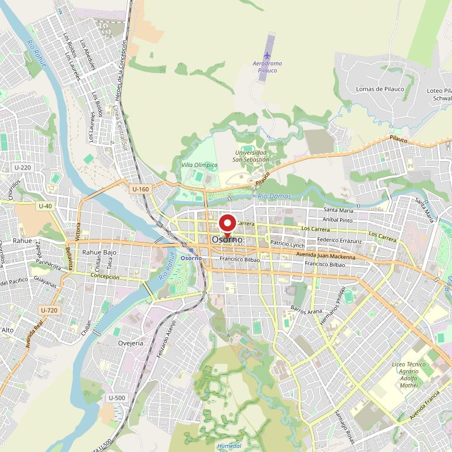

Pernos y espárragos
- Hexagonal corriente, M4 a M24
- Cabeza de hongo con cuello cuadrado
- Avellanado, Allen y de brida
- Espárrago roscado por metro
- Rosca en pulgadas, UNC y UNF
Pernería · fijaciones · ferretería industrial
Pernos, tuercas, golillas y fijaciones para maquinaria agrícola, taller y construcción. Métrico y en pulgadas, del M4 al M24.
4,6 408 reseñas en Google · la pernería de referencia de Osorno
FOTO 1 · el mostrador o el mural de cajones, a lo ancho
01
Casi todos los llamados que entran acá empiezan igual: «se me cortó un perno del…». Estas son las piezas que más salen por máquina, con los cuatro datos que hay que traer o dictar por teléfono. Si llega con el perno cortado en la mano, mejor todavía.
Perno de reja, cabeza avellanada
Se corta al topar piedra. Es el que más sale en la temporada de laboreo.
Perno de disco, cabeza de hongo
Se suelta y se ovala el agujero. Conviene cambiar la golilla en el mismo acto.
Perno de cuchilla del sinfín
Trabaja a corte permanente. En 10.9, nunca en 8.8: dura la mitad.
Fijación de estructura, inoxidable
Acá el zincado no sirve: el lavado con ácido se lo come en un año.
Perno de muelle / abrazadera en U
Largo poco común: es de los que hay que pedir con la medida exacta.
Perno de diente, alta resistencia
Se pide con la tuerca autoblocante del mismo grado, no con una común.
Los cuatro datos son siempre los mismos: diámetro, largo, paso de rosca y grado. Con eso se busca en un minuto; sin eso hay que medir con el pie de metro sobre el mostrador — y también se hace, pero demora.
02
No es un catálogo: es lo que está guardado acá, en cajones, para llevarse hoy. Lo que no está se pide y llega, pero eso se avisa en el mostrador y no se promete por internet.
FOTO 2 · los cajones o la bodega por dentro
En un rubro donde casi nadie escribe reseñas, cuatrocientas ocho significan algo muy concreto: que la gente encontró lo que buscaba y volvió a buscar lo siguiente en el mismo mostrador.
Lo que se repite en los comentarios no es el precio: es que atienden sabiendo. Uno llega con un fierro cortado y sale con la pieza correcta.
03
Es la segunda pregunta del mostrador y la que más plata ahorra contestar bien. El mismo perno cuesta tres precios distintos según el acabado, y en el lugar equivocado el barato sale caro.
El corriente. Bajo techo y en seco dura años.
No usar en: intemperie permanente, purín, sala de ordeña, orilla de lago.
Capa gruesa y opaca. Aguanta lluvia y sol de frente.
Ojo: la capa engruesa la rosca — la tuerca va del mismo tipo o no entra.
A2 para agua dulce. A4 para químicos, sal y lavados con ácido.
Cuesta más y conviene sólo donde corresponde: no todo el galpón necesita inox.
04
Pernos Osorno es una pernería de mostrador: no vende por internet ni por catálogo. Atiende al agricultor, al mecánico y al maestro que llega con la pieza rota en la mano, y su trabajo es que no tenga que volver mañana.
Está en la salida hacia el sector rural, que es donde tiene que estar una pernería en Osorno: la mitad de lo que sale por el mostrador termina montado en una máquina que trabaja tierra o leche.
05
FOTO 3 · la fachada con el letrero, desde la vereda
